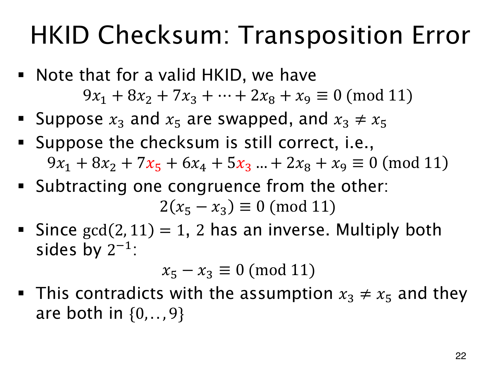

L1.13 · 第 22 页讲解原文
查看这一页课件

不同权重使数字换位留下痕迹
若所有位置权重相同，交换两个数字不会改变总和。加权校验用了不同权重，便能检测一些这样的 transposition error（换位错误）。
以不同的 x3,x5 为例，权重为 7,5。原贡献是 7x3+5x5，交换后为 7x5+5x3，变化量为
(7x5+5x3)−(7x3+5x5)=2(x5−x3).
若交换后仍通过模 11 检查，这个差必须同余零。2 在模 11 下可逆，于是 x5−x3≡0(mod11)。两个数字都在 0 至 9 内，便只能相等，与已知不同矛盾。
其他两个数字位置也能这样证明：权重不同，差又不是 11 的倍数，就可消去权重差。若数字本就相同，交换没有改变号码，也无内容变化需要检测。
这仍不保证检测任意多位错误，因为不同位置的改动可能在模 11 下互相抵消。